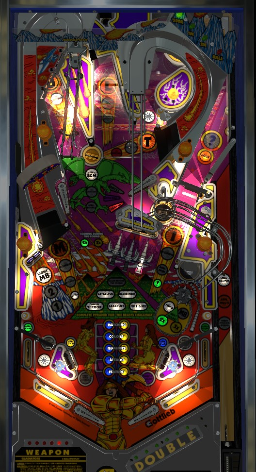

Gladiators is all about upgrading modes during normal play, then playing those modes after increasing their value. Spell Double by shooting the Catapult saucer near the upper left flipper. Multiply score in modes by repeatedly shooting the Abyss under the upper right flipper (hold up both flippers after shooting the L center loop shot for the best chance at this). Upgrade the next mode from a 15-second timed mode to a 2-ball multiball by shooting the lower left standup target 3 times. After doing as many of these as possible, shoot the lower right saucer to start a mode- Catapult and Bladefight are most lucrative.
The skill shot is a timed plunge into the partially obscured Mystery saucer at the back of the game. The moving light in the shooter lane indicates what the skill shot can be; it will either award a letter in Weapon, spot a letter in Multi, or start the currently selected Pyramid round.
If the next letter in Multi is the I, making the skill shot will instantly start multiball.
Starting Calm Before the Storm mode via the skill shot will cause it to be a 2-ball multiball instead of 3-ball. I am not sure if it is possible to start Beast Challenge wizard mode from a skill shot.
The Skill Shot is not available after Ball Save is used or after a ball is locked for standard multiball.
Note that at any time during gameplay, pressing and holding both flippers disables the pop bumpers, in case you're under a time crunch for any reason and want the ball to get back to a flipper instead of staying in the pops.
Gladiators has two flavors of score multipliers; to earn really high scores, get both running at the same time.
DOUBLE letters: Any shot to the Catapult saucer near the upper left flipper awards a letter in the word Double. Progress on Double is indicated by green LED lights on the game's apron. Completing the word Double means that for the remainder of the current ball in play, everything is doubled, including all scoring and any earned extra balls or Specials. Features that do not score points directly but instead contribute to future bonuses, such as Cataclysm and Calm Before the Storm modes, also have their contributions doubled while Double is running. Double letters carry over from ball to ball, player to player, and game to game. One letter in Double is given for free any time a game ends, unless DOUBL are already lit, in which case the game will not automatically complete the word Double in this way.
Mode multipliers: To advance the multiplier of the next main mode you play, make the Abyss saucer. This saucer is located underneath the upper right flipper and cannot be shot directly. The easiest way to make this saucer is to shoot the L center loop shot, then hold up both flippers; the ball will bounce off the upper left flipper, into the gap created by the raised upper flipper, and frequently (but not always) fall into the saucer. Every even-numbered shot to the Abyss throughout the game increases the multiplier for the scoring of the next mode, up to a maximum of 3x; if the next mode is already at 3x value, attempting to advance the mode multiplier again will award a flat 20,000,000 points. Mode multipliers can also be awarded from the Mystery or Weapon awards. After playing a mode with a multiplier enabled, this feature resets; to have the multipliers apply to another mode, you must make more shots to the Abyss. Mode multipliers do apply to the Cataclysm and Calm Before the Storm modes that increase future bonuses rather than earning direct score, but mode multipliers cannot be used on Beast Challenge wizard mode.
The lower right saucer is always available to start the currently flashing Pyramid main mode. Pop bumpers rotate which mode is flashing. The Mystery award and Skill Shot can also start the next Pyramid round. The insert lights in front of the lower right saucer describe the rules of the next mode you start. At first, only Timed is lit; this means the mode is single-ball and timed to 15 seconds. Hitting the lower left standup target 3 times will upgrade a mode from being a 15-second timed mode to being a 2-ball multiball that lasts until one of the two balls drains; this is indicated by the Timed insert unlighting, and the MB insert lighting in its place. There is no ball save in any multiball modes, so poor or unlucky play can lead to a multiball mode being shorter then the 15 seconds you would get from the Timed version of the mode.
The green and yellow 2x and 3x inserts correspond to mode multipliers collected from shooting the Abyss. You cannot multiply the value of a mode in progress using the Abyss; earning a mode multiplier while a mode is running will apply that multiplier to the next mode you play, not the one currently in progress. If the currently-in-progress mode has a mode multiplier associated with it, the green 2x or yellow 3x lights near the drop targets will be lit accordingly.
Lower level modes; all three of these modes must be played before moving up to the middle level
Rain of Terror: the Abyss saucer scores 5,000,000 points, the spinner in the right orbit scores 1,000,000 points per spin, and the pop bumpers score 500,000 points per hit.
Catapult: the left ramp scores 2,000,000 points, and the crane rail at the top of the left ramp constantly swings back and forth. Shooting the Catapult saucer near the upper left flipper scores 50,000,000 points, regardless of whether it is shot directly or fallen into from the crane rail. If you have an even moderately reliable way to make the Catapult saucer from any flipper, you should absolutely try to multiply this mode to earn points by the hundreds of millions.
Fire & Ice: the M left ramp, U and L center loop shots, and T side ramp are all lit. Making a lit shot scores 3,000,000 points and unlights it. Making all 4 shots scores 30,000,000 points and relights them for another pass. The U, L, and T shots near the top of the playfield are combo-friendly enough that completing a set of 4 within 15 seconds is more reasonable than it may seem.
Middle level modes: both of these modes must be played before moving to the upper level
Cataclysm: starting this mode adds 5,000,000 points to the Cataclysm Bonus, which is built over the course of the game and awarded at the end of each ball. During this mode, 2 of the 5 shots corresponding to letters in Multi will be lit, and the lit shots change every few seconds. Hit a lit shot to add 5,000,000 points (times applicable Double and mode multipliers) to the Cataclysm Bonus.
Blade Fight: each individual drop target in the center bank awards 5,000,000 points. Completing the bank once increases the per-target value to 10,000,000, and completing the bank a second time increases the per-target value to 20,000,000. Upgrading Blade Fight in particular to a multiball before starting it is especially helpful due to the center drain risk of the drop targets; being able to apply Double or mode multipliers to drop targets worth up to 20,000,000 points is quite effective as well.
Upper level mode: must be played before to qualify Beast Challenge wizard mode
Calm Before the Storm: This mode is always a multiball. It will be a 3-ball multiball if it is started from the mode saucer in the lower right, or a 2-ball multiball if started in any other way. The Mega-Bonus starts the game at 30,000,000 points. During Calm Before the Storm, shooting any of the letters in Multi adds 3,000,000 points (times applicable Double or mode multipliers) to the Mega-Bonus. If there is a maximum Mega-Bonus value, it is at least 210,000,000 points. The Mega-Bonus is awarded at the end of the game if Calm Before the Storm was played at least once; it is also the value of each mode shot during Beast Challenge wizard mode. Calm Before the Storm ends when there is one ball left in play.
Wizard mode: indicated by a completely flashing Pyramid after Calm Before the Storm ends. Cannot be upgraded into a multiball, but can be upgraded by Double and mode multipliers.
Beast Challenge: shoot the game's 3 saucers in order: first the Mystery saucer (via the right orbit), then the Abyss saucer underneath the upper right flipper, then the Catapult saucer near the upper left flipper. Each made saucer scores the Mega-Bonus value built up during Calm Before the Storm, times Double or mode multipliers if applicable. This can be hundreds of millions or billions of points per shot if you are able to stack multipliers during both Calm Before the Storm and Beast Challenge. Beast Challenge is untimed; it runs until you win or drain. If you win, you score an instant Special and you instantly enter your initials as the most recent Beast Slayer. Then, all Pyramid modes will be reset, and you must play through all 6 again for another chance to play Beast Challenge. If you drain, only the middle and upper levels of the Pyramid are reset, so you only have to replay 3 of the main modes before taking another shot at Beast Challenge. The Mega-Bonus never resets at any point in the game, so subsequent Beast Challenges within a single game will always be more valuable than previous ones.
The left ramp, the two entrances to the center loop, the side ramp, and the right orbit award the letters in MULTI. Multi letters can also be spotted from the skill shot or mystery award. Spelling Multi in order lights the mystery saucer at the back of the game for a lock; making this lock instantly starts multiball. The right spinner awards the I in Multi; always try to make a full shot to the right orbit to collect the I in Multi and land in the mystery saucer in the same shot, because this qualifies and starts multiball in one fell swoop. Progress on Multi is held over from ball to ball, but if you light the lock and then drain before starting multiball, you have to respell Multi from the beginning to relight the lock. There is no lock stealing of any kind. For the first two multiballs, you have all the time you need to collect Multi letters; starting with the 3rd multiball, if you do not collect a Multi letter within about 15 seconds, you will lose one of the Multi letters you already have.
Standard multiball always has only 2 balls and has no ball saver whatsoever. In multiball, any shot up the left ramp scores a jackpot worth 20,000,000 points, and holds the ball at the top of the ramp for about 15 seconds. If both balls are held at the top of the ramp, they will be dropped to the upper left flipper one at a time; try to shoot these balls up the side ramp right away to score a 100,000,000 point super jackpot followed by a 200,000,000 point ultimate jackpot. Whether you succeed or fail, you can always shoot balls back up the left ramp for more 20,000,000s, and you get another chance at the super/ultimate jackpot if you "relock" both balls at the top of the left ramp again. The only way to increase the value of the jackpots above what is listed here is to have Double running.
One of the two entrances to the center loop (the U or the L in Multi) will always be lit for Spell Weapon. Making that shot awards the next letter in Weapon, as indicated by the red LEDs on the left side of the table apron. Spelling Weapon lights the Abyss saucer underneath the right flipper for an award.
For the first Weapon, the three award choices are instant multiball, 10,000,000 points, or start the Cataclysm mode. Starting with the second Weapon, the three award choices are ? score (which seems to be 0 quite frequently, I don't know the exact range), 30,000,000 points, or ? Feature (which I have only ever seen be Advance Mode Multiplier or Instant Multiball). You have 3 seconds to make your decision, using the flippers to move between the options listed on the DMD.
The right slingshot and left drop target move the blue light in the grid near the flippers. The left slingshot and right drop target move the yellow light. If the blue and yellow lights ever line up horizontally, Attack begins. During Attack, the crane arm at the end of the left ramp swings back and forth. Making the Catapult saucer- either via the left ramp or via shooting the saucer directly- scores 30,000,000 points and ends Attack. Attack seems to last until a main Pyramid mode is started. If the 30,000,000 point Attack bonus is collected, the yellow and blue lights will not be able to moved again until a Pyramid main mode is played.
Making the M, U, L, or T shots at any time lights the next letter for a Combo (making M lights U, making U lights L, etc.). Making a shot lit for Combo scores 1 Combo. Hitting any switch other than the shot lit for Combo causes the Combo to unlight. A Combo starts at a value of 500,000 points; if you keep the Combo going by making lit shots without missing, each shot scores a Consecutive Bonus worth twice as much as the previous Combo, up to a maximum of 16,000,000 points. It appears to be the case that once you have a Combo that earns a 16,000,000 Consecutive Bonus, it will no longer be possible to earn more than 1,000,000 points from a Consecutive Bonus for the rest of the game. Making a certain number of Combos over the course of a game- the exact number varies, but is usually around 15-20- scores an instant extra ball. If you make twice as many combos as were required for the extra ball, you get a 50,000,000 point bonus, and if you make 90 combos in one game, you get a 70,000,000 point bonus. The game does keep counting Combos past 90- the most I've seen is 107- but the DMD will continue to say "70,000,000 at 90" so I assume there are no further awards.
When no mode or multiball is running, making any Multi shot lights the saucer at the end of the right orbit for a Mystery award. The mystery award can be one of many things, and this list is likely not exhaustive:
Gottlieb games around this time liked to include a Catch-Up award in their Mystery pools. Catch-up is only available in multiplayer games and causes the current player's score to magically become equal to the leading player's score. I have not confirmed whether this award does or does not exist in Gladiators.
When no mode or multiball is running, each drop target down scores 30,000 points. If all 3 drop targets were standing and only the middle one gets knocked down, an additional 5,000,000 is awarded. Completing the bank scores 300,000 points and lights the right orbit for Acu-Spin. The game will pick a number, usually between 10 and 20, and count the number of spins registered by the spinner on the next shot to the right orbit. If the exact number of spins is equal to the number the game chose, you earn an instant extra ball. This is pretty much impossible to do on purpose.
Shooting both the left ramp and the side ramp 4 times each in a single ball lights the Abyss saucer for an extra ball. As far as I can tell, this extra ball can only be earned once per game.
Gladiators has a conventional in/out lane setup, but it is quite compressed vertically. In lanes are very short, score 10,000 points, and are occasionally lit for Advance Random Color- this seems to be lit after an Attack award is collected to give the yellow and blue lights more chances to move and avoid being lined up. Out lanes score Random Score, which seems to be any of various values between 500,000 and 10,000,000 points, similar to what can be earned from the Mystery. The "slingshots" are standup targets with kickers attached to them that are able to fling the ball away.
If you have not played Cataclysm mode in the current game, there is 0 end of ball bonus. Cataclysm Bonus is advanced 5,000,000 points at a time by starting, or making a lit shot during, Cataclysm mode. If Cataclysm mode is played multiple times, the bonus is built up across all plays and never resets. Cataclysm Bonus is collected at the end of every ball once it has been played at least once. Also, the Mega-Bonus value is collected at the end of the game only, and only if Calm Before the Storm was played at least once in that game. Early on, don't be afraid to nudge hard to save a ball if you know you have no bonus, but generally avoid tilting if you've played Cataclysm, and absolutely avoid tilting the final ball of the game if you have played Calm Before the Storm.
If extra balls and specials can be set to have a point value for competition/novelty play, I am not aware of what that value is. Something between 25,000,000 and 100,000,000 seems reasonable.
| If you need... | Try... |
| 5,000,000 points | ...starting a mode and making one or two shots in that mode, or making a couple Combos. |
| 20,000,000 points | ...starting a mode with the goal of making decent progress, possibly with the help of a 2x mode multiplier, or start standard Multiball and make a left ramp jackpot. |
| 50,000,000 points | ...starting Catapult mode and making the Catapult saucer, starting Blade Fight mode as a multiball and going to down on drop targets, or starting standard Multiball with the goal of making multiple left ramp jackpots. |
| 200,000,000 points | ...starting standard Multiball and earning at least one super jackpot, and preferably also an ultimate jackpot. |
| 500,000,000 points | ...focusing on completing Double and stacking it with mode multipliers to make modes such as Catapult and Blade Fight worth much larger, more efficient points. |
| 1,000,000,000 points or more | ...working through modes until you complete the bottom and middle levels of the Pyramid, making sure Double and mode multipliers are running for Calm Before the Storm and Beast Challenge. Beast Challenge is a much more accessible wizard mode than many others of its time, and with a good Mega-Bonus and well-timed multipliers, you can earn points by the billions as you reach the end of the game progression. |